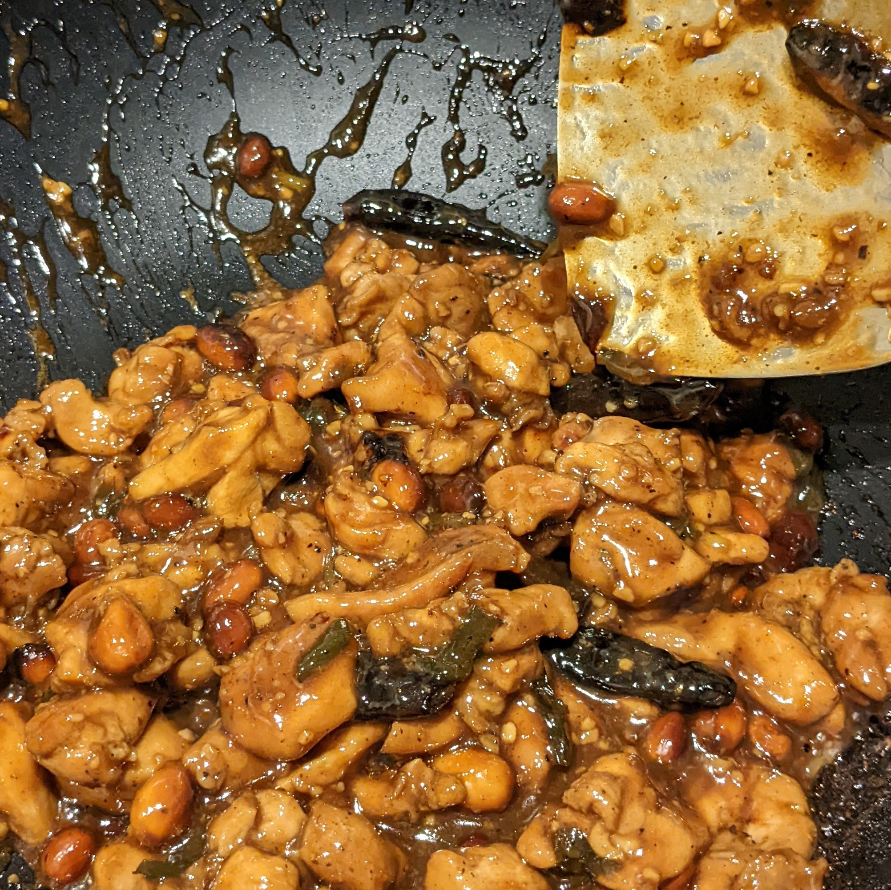

Kung Pao Chicken

Ingredients
-
Kung Pao Sauce
- Brown Sugar - 33 grams
- Corn Starch - 10 grams
- Soy Sauce - 60 grams
- Chinese Black Vinegar - 50 grams
- Chicken Stock - 44 grams
- Water - 36 grams
- Shaoxing Wine - 31 grams
-
Chicken
- Chicken Thighs - 2lbs
- Corn Starch - 4 grams
- Soy Sauce - 36 grams
- Shaoxing Wine - 10 grams
-
Other essential components
- Vegetable oil - 4 tbsp
- Raw Peanuts - 50 grams
- Tianjin Chillis - 10 chillies
- Green Onions
- Garlic
- Ginger
Steps
- Cut chicken into 1 inch pieces and add to a bowl
- Add soy sauce, shaoxing wine and corn starch and mix thoroughly. Leave to rest for 30 mins.
- Prepare Kung Pao Sauce, chop green onions and mesasure peanuts and chillies
- Add Vegetable Oil to wok, followed by peanuts and chillies respectively
- Remove peanuts and chillies and cook chicken in batches and then remove all chicken
- Add Green onions, garlic and ginger and cook for 30 seconds
- Add back chicken, peanuts, chillies and kung pao and cook til sauce as reduced to a thick black sauce
- Serve with rice and enjoy!